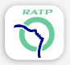
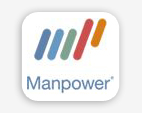
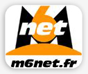

Des missions variées à l'initiative des consultants
Les Consultants de Néovia réalisent des missions variées de type :
- Analyse/Conception,
- Développement,
- Encadrement, Expertise
pour la réalisation d'applications stratégiques auprès de Grands Comptes comme de PME dans tous les secteurs d'activités.
Voici à titre d'exemple, quelques missions réalisées par les Consultants de néovia :
-
RATP - 91
- Objet : Conception et développement d'un portail grand public
- Equipe : 1 chef de projet, 2 fonctionnels, 3 développeurs
- Rôle du Consultant néovia : Choix des outils, Méthode, Conception, Développement.
- Durée : 12 mois
- Technologies : UML, J2EE,
- Outils : Rational Rose, Websphere 6, Oracle v8, Solaris.
-
MANPOWER - st ouen 93
- Objet : Conception et développement d'une application stratégique orientée sur le métier du recrutement
- Equipe : 1 chef de projet, 2 fonctionnels, 3 développeurs
- Rôle du Consultant néovia : Méthode, Conception, Développement.
- Durée : 6 mois
- Technologies : UML, J2EE, principes de l'Extreme Programming
- Outils : Synergy CM / CS, Rational Rose, Websphere 6, DB2 v8, Solaris, RAD 6.
-
IBM centre de recherche - la gaude 06

- Objet : Recherche autour des RAD
- Equipe : 1 chef de projet, 2 fonctionnels, 3 développeurs
- Rôle du Consultant néovia : Choix des outils, Méthode, Conception, Développement.
- Durée : 12 mois
- Technologies : UML, J2EE,
- Outils : Rational Rose, Websphere 6.
-
FRANCE TELECOM - montpellier 34
- Objet : Conception de nouvelles fonctionnalités pour une application Nomade de suivi d'activité des techniciens.
- Equipe : 1 chef de projet, 3 développeurs
- Rôle du Consultant néovia : Encadrement, Organisation, Conception, Suivi technique
- Durée : 6 mois
- Technologies : UML, J2EE, Nomadisme
- Outils : PVCS Dimension / Tracker, Objecteering 5.2, JonAS 3, Oracle 9i, Linux, Eclipse
-
PROBTP - cagnes-sur-mer 06
- Objet : mission d'expertise technique
- Equipe : 1 expert
- Rôle du Consultant néovia : expertise
- Durée : quelques jours
- Technologies : UML, J2EE,
- Outils : Eclipse
-
Hutchinson - montargis 45
- Objet : Mission d'expertise de conception d'arborescence LDAP
- Equipe : 1 expert
- Rôle du Consultant néovia : Spécification, Architecture , Développement.
- Durée : 2 mois
- Technologies : J2EE, LDAP
- Outils : iPlanet LDAP server 5.1, Eclipse 3.0.1, Tomcat 3.3.1.
-
M6 WEB - lille 59
- Objet : Mission d'expertise de conception d'arborescence LDAP
- Equipe : 1 expert
- Rôle du Consultant néovia : Spécification, Architecture , Développement.
- Durée : 2 mois
- Technologies : J2EE, LDAP
- Outils : iPlanet LDAP server 5.1, Eclipse 3.0.1, Tomcat 3.3.1.
-
Témoignage Consultant
"Après de longues années baladé en clientèle pour le compte de SSII plus soucieuses de leur rentabilité que de mes intérêts, j'envisageais de m'installer en tant qu'indépendant, mais le côté administratif me rebutait quelque peu.
Avec Néovia, j'ai trouvé une solution intermédiaire qui m'offre une grande liberté d'action, une prise en charge totale du "back office", et une sécurité de rémunération par rapport à l'indépendant"
SP